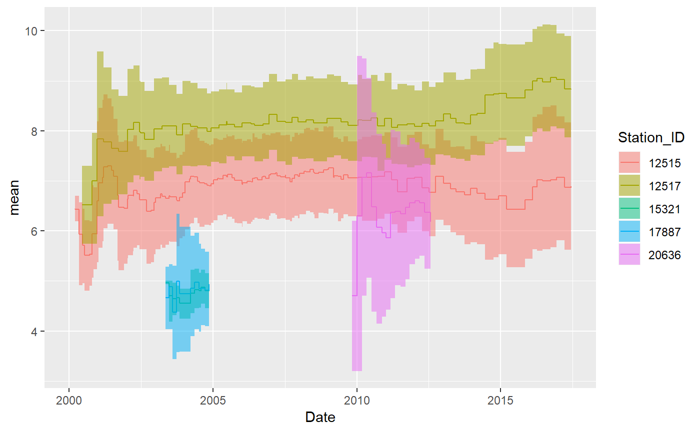
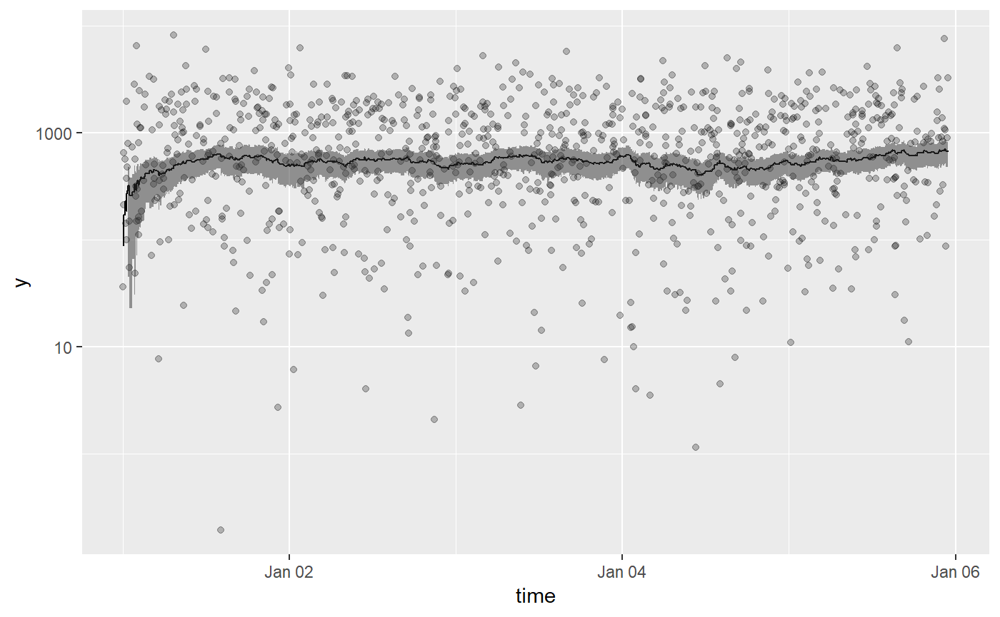
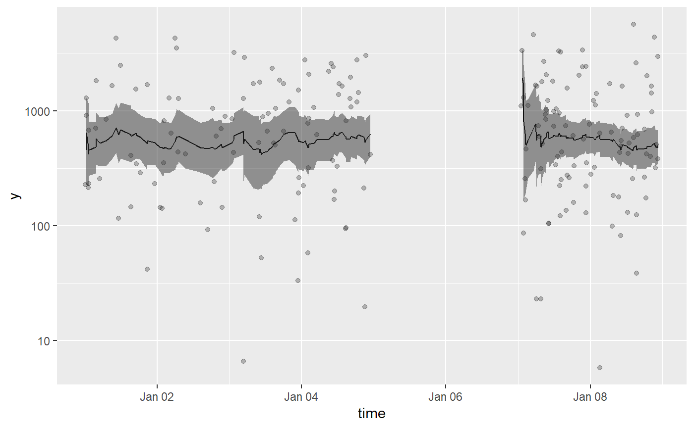
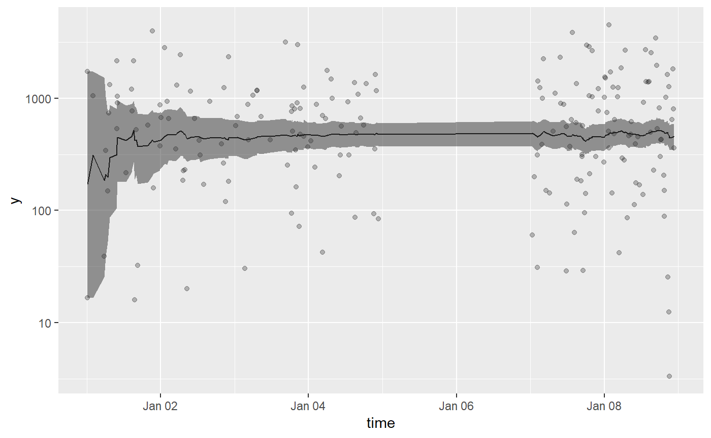

The goal of tbrf is to provide time-window based rolling statistical functions. The package differs from other rolling statistic packages because the intended use is for irregular measured data. Althogh tbrf can be used to apply statistical functions to regularly sampled data, zoo, RcppRoll, and other packages provide fast, efficient, and rich implementations of rolling/windowed functions.
An appropriate example case is water quality data that is measured at irregular time intervals. Regulatory compliance is often based on a statistical average measure or exceedance probability applied to all samples collected in the previous \(n\)-years. For each row of data, tbrf functions select previous observations in the time windows specified by the user and applies the statistical function.
Installation
tbrf is available on CRAN:
The development version is maintained on github and can be installed as:
Available Functions
tbr_binom: Rolling binomal probability with confidence intervals.tbr_gmean: Rolling geometric mean with confidence intervals.tbr_mean: Rolling mean with confidence intervals.tbr_median: Rolling median with confidence intervals.tbr_misc: Accepts user specified function.tbr_sd: Rolling standard deviation.tbr_sum: Rolling sum.
Usage
Core functions include five arguments:
.tbl = dataframe used by the function
x = column containing the values to calculate the statistic on
tcolumn = formatted date-time or date column
unit = character indicating the time unit used, one of "years", "months", "weeks", "days", "hours", "minutes", "seconds"
n = numeric, indicating the window lengthAdditional arguments for calculating confidence intervals in tbr_gmean, tbr_mean, and tbr_median are passed to boot and boot.ci.
Basic Example
For example, get the 5-year rolling mean:
tbr_mean(Dissolved_Oxygen, x = Average_DO,
tcolumn = Date, unit = "years", n = 5)
## # A tibble: 236 x 9
## Station_ID Date Param_Code Param_Desc Average_DO Min_DO mean
## <int> <date> <chr> <chr> <dbl> <dbl> <dbl>
## 1 12515 2000-01-03 00300 OXYGEN, DISSO~ 6.19 6.19 NA
## 2 12515 2000-03-14 00300 OXYGEN, DISSO~ 6.7 6.7 6.73
## 3 12517 2000-03-14 00300 OXYGEN, DISSO~ 7.3 7.3 6.73
## 4 12515 2000-03-16 00300 OXYGEN, DISSO~ 6.41 6.41 6.65
## 5 12515 2000-05-03 00300 OXYGEN, DISSO~ 4.42 4.42 6.20
## 6 12517 2000-06-14 00300 OXYGEN, DISSO~ 5.74 5.74 6.13
## 7 12515 2000-06-15 00300 OXYGEN, DISSO~ 4.86 4.86 5.95
## 8 12515 2000-07-11 00300 OXYGEN, DISSO~ 4.48 4.48 5.76
## 9 12515 2000-09-12 00300 OXYGEN, DISSO~ 5.64 5.64 5.75
## 10 12517 2000-10-17 00300 OXYGEN, DISSO~ 7.96 7.96 5.97
## # ... with 226 more rows, and 2 more variables: lwr_ci <lgl>, upr_ci <lgl>This works in a tidy-workflow as:
library(ggalt) #for stat="stepribbon""
Dissolved_Oxygen %>%
mutate(Station_ID = as.factor(Station_ID)) %>%
group_by(Station_ID) %>%
tbr_mean(Average_DO, Date, "years", 5, conf = 0.95, type = "perc") %>%
ggplot() +
geom_step(aes(Date, mean, color = Station_ID)) +
geom_ribbon(aes(Date, ymin = lwr_ci, ymax = upr_ci, fill = Station_ID),
stat = "stepribbon", alpha = 0.5)
Different Time Units
tbrf works with times or dates.
## Generate some sample data
sampledata <- function(N, start, end) {
start <- as.POSIXct(start, "%Y-%m-%d %H:%M:%S", tz = "")
end <- as.POSIXct(end, "%Y-%m-%d %H:%M:%S", tz = "")
time <- sample(seq(start, end, by = "min"), N)
df <- tibble(time = time,
y = -1000*log(runif(N)))
return(df)
}
df <- bind_rows(sampledata(100, "2017-01-01 00:01:00", "2017-01-04 23:00:00"),
sampledata(100, "2017-01-07 00:01:00", "2017-01-08 23:00:00"))Plot 120-minute geometric means:
df %>%
tbr_gmean(y, time, unit = "minutes", n = 120, conf = 0.95, type = "perc") %>%
ggplot() +
geom_point(aes(time, y), alpha = 0.25) +
geom_line(aes(time, mean)) +
geom_ribbon(aes(time, ymin = lwr_ci, ymax = upr_ci), alpha = 0.5) +
scale_y_log10()
Plot 24-hour geometric means:
df %>%
tbr_gmean(y, time, unit = "hours", n = 24, conf = 0.95, type = "perc") %>%
ggplot() +
geom_point(aes(time, y), alpha = 0.25) +
geom_line(aes(time, mean)) +
geom_ribbon(aes(time, ymin = lwr_ci, ymax = upr_ci), alpha = 0.5) +
scale_y_log10()
Plot 4-day geometric means:
df %>%
tbr_gmean(y, time, unit = "days", n = 4, conf = 0.95, type = "perc") %>%
ggplot() +
geom_point(aes(time, y), alpha = 0.25) +
geom_line(aes(time, mean)) +
geom_ribbon(aes(time, ymin = lwr_ci, ymax = upr_ci), alpha = 0.5) +
scale_y_log10()
Parallel Processing
Confidence Intervals in tbr_gmean, tbr_mean, and tbr median are calculated using boot::boot_ci. If you do not need confidence intervals, calculation times are substantially shorter. parallel, ncores, and cl arguments are passed to boot and can improve computation times. See ?boot for more details on parallel operations. An example for parallel processing in Windows is shown below:
library(microbenchmark)
library(snow)
##benchmark run on a windows Intel I7 2.6Ghz dual core laptop
cl <- makeCluster(2, type = "SOCK")
microbenchmark(
"noCI" = tbr_gmean(Dissolved_Oxygen, Average_DO, Date,
"years", 5),
"single" = tbr_gmean(Dissolved_Oxygen, Average_DO, Date,
"years", 5, R = 1000, conf = .95,
type = "perc"),
"parallel" = tbr_gmean(Dissolved_Oxygen, Average_DO, Date,
"years", 5, R = 1000, conf = .95,
type = "perc", parallel = "snow",
ncpus = 2, cl = cl),
times = 20)
## Unit: milliseconds
## expr min lq mean median uq
## noCI 356.7044 371.4177 387.9659 379.9838 398.2247
## single 13797.9694 13925.8277 14316.4646 14182.7591 14565.7968
## parallel 8080.2448 8127.0989 8264.8726 8169.2343 8380.8470
## max neval
## 476.9167 20
## 15259.7203 20
## 8778.6763 20
stopCluster(cl)